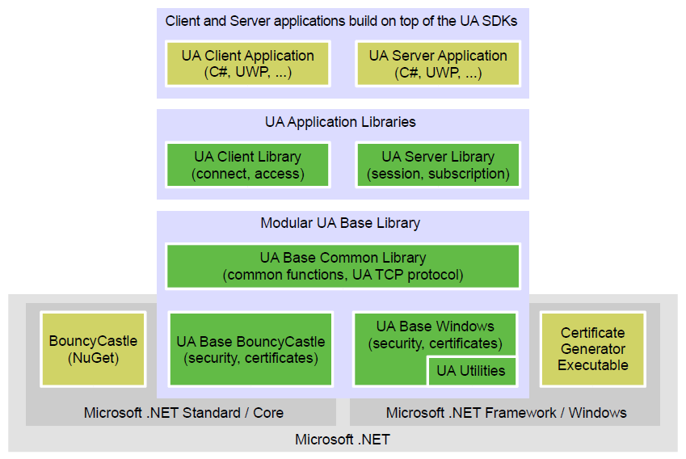

SDK Overview
Introduction
The UA SDK is a set of .NET libraries that supports you in writing OPC UA servers and clients in the .NET environment.
The UA SDK actually consists of two SDKs, a Server SDK and a Client SDK. Both use the same UA Base Library which provides the communication stack and common functionality used in servers and clients applications.

UA SDK Architecture Overview
Server Examples
The Unified Automation .NET OPC UA SDK contains several examples on how to build an OPC UA server using the SDK. The corresponding Visual Studio Solutions are included as well and can serve as a basis for your own projects.
The lessons provided in Getting Started describe how to develop a full-featured OPC UA server step by step based on a simple building automation scenario. Lesson 1 starts with an empty OPC UA server, and commonly used features are added step by step in the following lessons. The Unified Automation UaModeler provides a convenient way of building the information model. This is shown by example in Lesson 2.
- Ua Demo-Server In addition to that, the source code for the Unified Automation .NET based OPC UA demo server is included in the SDK. It contains an example (
LargeArrayNodeManager.cs) for implementing information integration without the toolkit functionality.
- Machine Demo-Server The Machine Demo Server example demonstrates how to write the model logic in C# classes and comfortably bind the instances to the server nodes set.
Client Examples
There are different levels of examples provided with the Client SDK to jump start your OPC UA client development. The corresponding Visual Studio Solutions are included as well.
- Basic Client The first example Client Getting Started provides initial sample code in a single source file for a simple data access client including connection establishment, read, write and data monitoring. This example is a good starting point to get familiar with the basic functionality of OPC UA.
- Client Getting Started The Getting Started application provides a rich set of sample code for the different services and features of OPC UA. The examples are designed in a way that they provide self-contained sample code for the different OPC UA services with the following features:
- Fully functional dialogs to execute single OPC UA services
- Self-contained sample code that can be copied from the sample code dialogs. The source code can be opened directly from dialogs
- Detailed documentation for the sample code. Documentation can be opened directly from dialogs
- Full Client The Full Client is an enhanced example showing several features of OPC UA in a generic user interface.
- Console Client The Console Client is an extended example developed using the Unified Automation OPC UA Client SDK .NET showing several features of OPC UA.